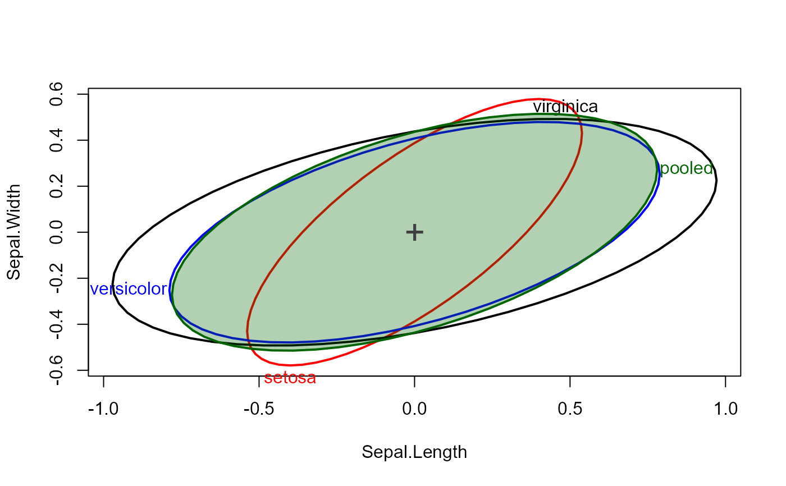
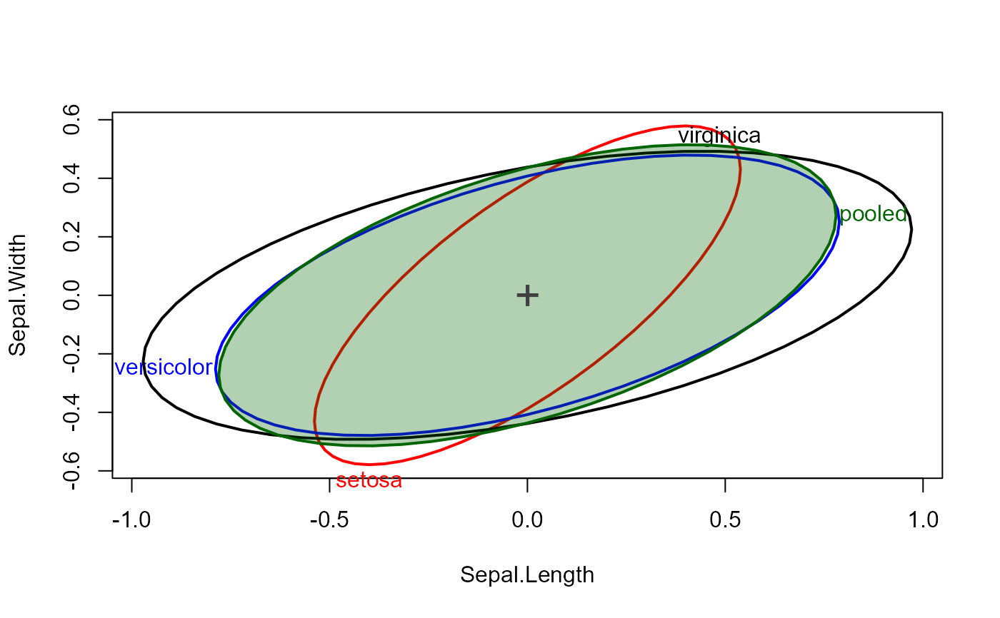
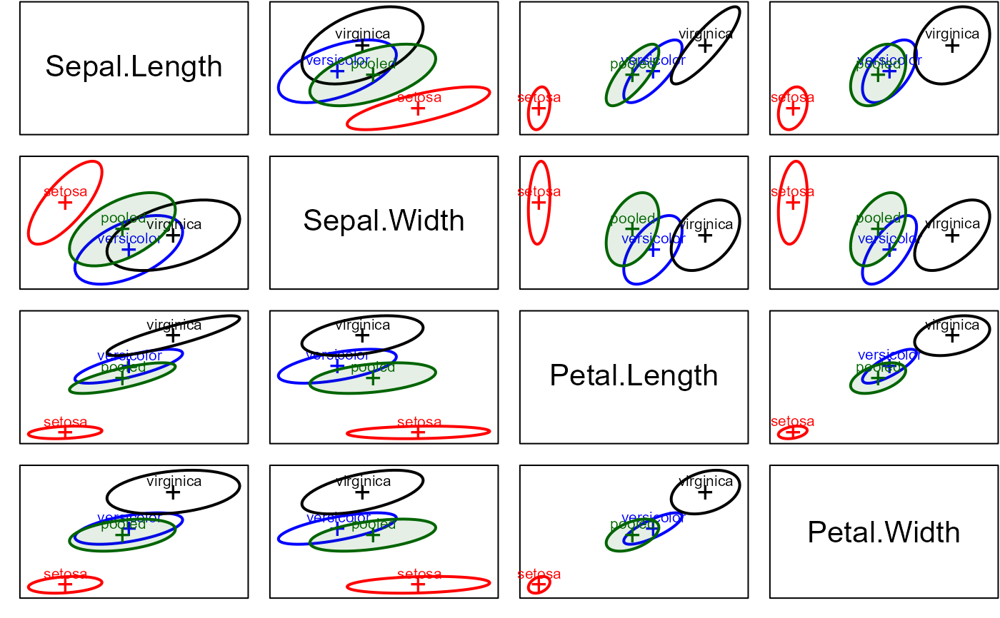
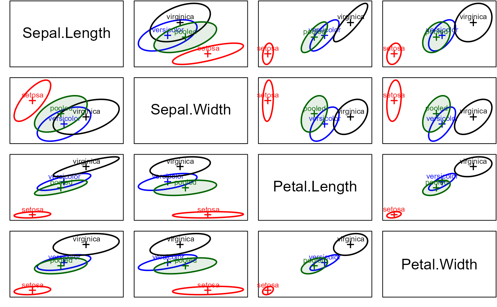

Draw classical and robust covariance ellipses for one or more groups
covEllipses.RdThe function draws covariance ellipses for one or more groups
and optionally for the pooled total sample. It
uses either the classical product-moment covariance estimate, or a
robust alternative, as provided by cov.rob.
Provisions are provided to do this for more than two variables,
in a scatterplot matrix format.
covEllipses(x, ...)
# S3 method for boxM
covEllipses(x, ...)
# S3 method for data.frame
covEllipses(x, group, pooled = TRUE, method = c("classical", "mve", "mcd"), ...)
# S3 method for matrix
covEllipses(x, group, pooled = TRUE, method = c("classical", "mve", "mcd"), ...)
# S3 method for default
covEllipses(x, means, df,
labels = NULL, variables = 1:2, level = 0.68,
segments = 60,
center = FALSE, center.pch = "+", center.cex = 2,
col = getOption("heplot.colors", c("red", "blue", "black", "darkgreen",
"darkcyan", "brown", "magenta", "darkgray")),
lty = 1, lwd = 2,
fill = FALSE, fill.alpha = 0.3,
label.pos = 0,
xlab, ylab,
vlabels, var.cex=2,
main = "",
xlim, ylim, axes = TRUE,
offset.axes, add = FALSE, ...)Arguments
- x
The generic argument. For the default method, this is a list of covariance matrices. For the
data.frameandmatrixmethods, this is a numeric matrix of two or more columns supplying the variables to be analyzed.- group
a factor defining groups, or a vector of length
n=nrow(x)doing the same. If missing, a single covariance ellipse is drawn.- pooled
Logical; if
TRUE, the pooled covariance matrix for the total sample is also computed and plotted- method
the covariance method to be used: classical product-moment (
"classical"), or minimum volume ellipsoid ("mve"), or minimum covariance determinant ("mcd").
- means
For the default method, a matrix of the means for all groups (followed by the grand means, if
pooled=TRUE). Rows are the groups, and columns are the variables. It is assumed that the means have column names corresponding to the variables in the covariance matrices.- df
For the default method, a vector of the degrees of freedom for the covariance matrices
- labels
Either a character vector of labels for the groups, or
TRUE, indicating that group labels are taken as the names of the covariance matrices. Uselabels=""to suppress group labels, e.g., whenadd=TRUE- variables
indices or names of the response variables to be plotted; defaults to
1:2. If more than two variables are supplied, the function plots all pairwise covariance ellipses in a scatterplot matrix format.- level
equivalent coverage of a data ellipse for normally-distributed errors, defaults to
0.68.- segments
number of line segments composing each ellipse; defaults to
40.- center
If
TRUE, the covariance ellipses are centered at the centroid.- center.pch
character to use in plotting the centroid of the data; defaults to
"+".- center.cex
size of character to use in plotting the centroid of the data; defaults to
2.- col
a color or vector of colors to use in plotting ellipses --- recycled as necessary A single color can be given, in which case it is used for all ellipses. For convenience, the default colors for all plots produced in a given session can be changed by assigning a color vector via
options(heplot.colors =c(...). Otherwise, the default colors arec("red", "blue", "black", "darkgreen", "darkcyan", "magenta", "brown", "darkgray").- lty
vector of line types to use for plotting the ellipses; the first is used for the error ellipse, the rest --- possibly recycled --- for the hypothesis ellipses; a single line type can be given. Defaults to
2:1.- lwd
vector of line widths to use for plotting the ellipses; the first is used for the error ellipse, the rest --- possibly recycled --- for the hypothesis ellipses; a single line width can be given. Defaults to
1:2.- fill
A logical vector indicating whether each ellipse should be filled or not. The first value is used for the error ellipse, the rest --- possibly recycled --- for the hypothesis ellipses; a single fill value can be given. Defaults to FALSE for backward compatibility. See Details below.
- fill.alpha
Alpha transparency for filled ellipses, a numeric scalar or vector of values within
[0,1], where 0 means fully transparent and 1 means fully opaque. Defaults to 0.3.- label.pos
Label position, a vector of integers (in
0:4) or character strings (inc("center", "bottom", "left", "top", "right")) use in labeling ellipses, recycled as necessary. Values of 1, 2, 3 and 4, respectively indicate positions below, to the left of, above and to the right of the max/min coordinates of the ellipse; the value 0 specifies the centroid of theellipseobject. The default,label.pos=NULLuses the correlation of theellipseto determine "top" (r>=0) or "bottom" (r<0).- xlab
x-axis label; defaults to name of the x variable.
- ylab
y-axis label; defaults to name of the y variable.
- vlabels
Labels for the variables can also be supplied through this argument, which is more convenient when
length(variables) > 2.- var.cex
character size for variable labels in the pairs plot
- main
main plot label; defaults to
"", and presently has no effect.- xlim
x-axis limits; if absent, will be computed from the data.
- ylim
y-axis limits; if absent, will be computed from the data.
- axes
Whether to draw the x, y axes; defaults to
TRUE- offset.axes
proportion to extend the axes in each direction if computed from the data; optional.
- add
if
TRUE, add to the current plot; the default isFALSE. This argument is has no effect when more than two variables are plotted.- ...
Other arguments passed to the default method for
plot,text, andpoints
Details
These plot methods provide one way to visualize possible heterogeneity of within-group covariance matrices in a one-way MANOVA design. When covariance matrices are nearly equal, their covariance ellipses should all have the same shape. When centered at a common mean, they should also all overlap.
The can also be used to visualize the difference between classical and robust covariance matrices.
Value
Nothing is returned. The function is used for its side-effect of producing a plot.
Examples
data(iris)
# compare classical and robust covariance estimates
covEllipses(iris[,1:4], iris$Species)
covEllipses(iris[,1:4], iris$Species, fill=TRUE, method="mve", add=TRUE, labels="")
 # method for a boxM object
x <- boxM(iris[, 1:4], iris[, "Species"])
x
#>
#> Box's M-test for Homogeneity of Covariance Matrices
#>
#> data: iris[, 1:4]
#> Chi-Sq (approx.) = 140.94, df = 20, p-value < 2.2e-16
#>
covEllipses(x, fill=c(rep(FALSE,3), TRUE) )
covEllipses(x, fill=c(rep(FALSE,3), TRUE), center=TRUE, label.pos=1:4 )

# method for a list of covariance matrices
cov <- c(x$cov, pooled=list(x$pooled))
df <- c(table(iris$Species)-1, nrow(iris)-3)
covEllipses(cov, x$means, df, label.pos=3, fill=c(rep(FALSE,3), TRUE))
# method for a boxM object
x <- boxM(iris[, 1:4], iris[, "Species"])
x
#>
#> Box's M-test for Homogeneity of Covariance Matrices
#>
#> data: iris[, 1:4]
#> Chi-Sq (approx.) = 140.94, df = 20, p-value < 2.2e-16
#>
covEllipses(x, fill=c(rep(FALSE,3), TRUE) )
covEllipses(x, fill=c(rep(FALSE,3), TRUE), center=TRUE, label.pos=1:4 )

# method for a list of covariance matrices
cov <- c(x$cov, pooled=list(x$pooled))
df <- c(table(iris$Species)-1, nrow(iris)-3)
covEllipses(cov, x$means, df, label.pos=3, fill=c(rep(FALSE,3), TRUE))
 covEllipses(cov, x$means, df, label.pos=3, fill=c(rep(FALSE,3), TRUE), center=TRUE)
covEllipses(cov, x$means, df, label.pos=3, fill=c(rep(FALSE,3), TRUE), center=TRUE)
 # scatterplot matrix version
covEllipses(iris[,1:4], iris$Species,
fill=c(rep(FALSE,3), TRUE), variables=1:4,
fill.alpha=.1)

# scatterplot matrix version
covEllipses(iris[,1:4], iris$Species,
fill=c(rep(FALSE,3), TRUE), variables=1:4,
fill.alpha=.1)
